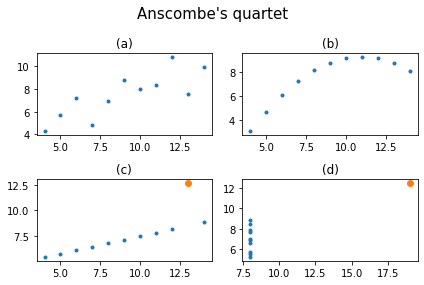
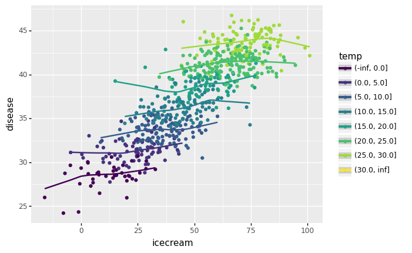
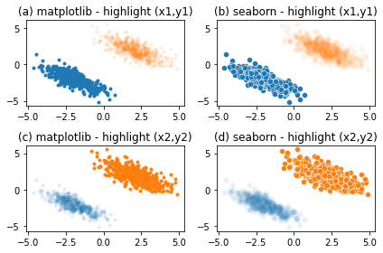
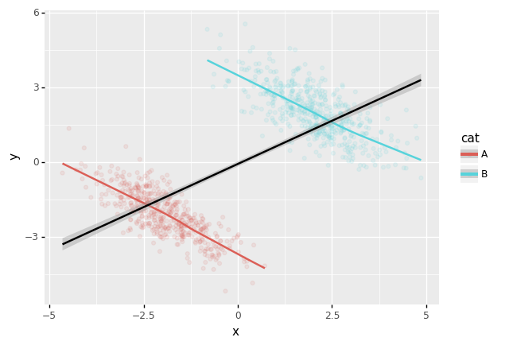
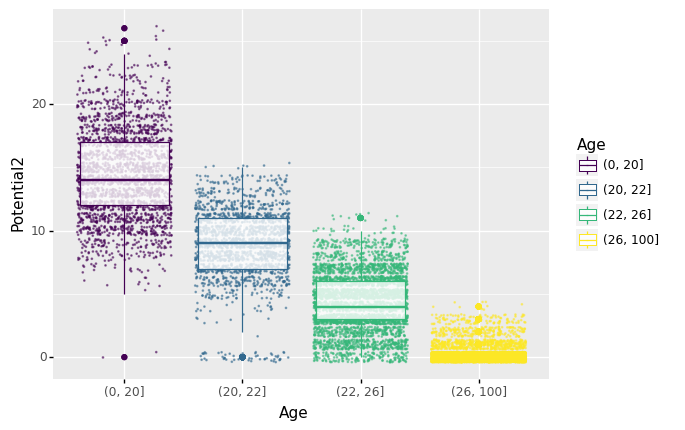
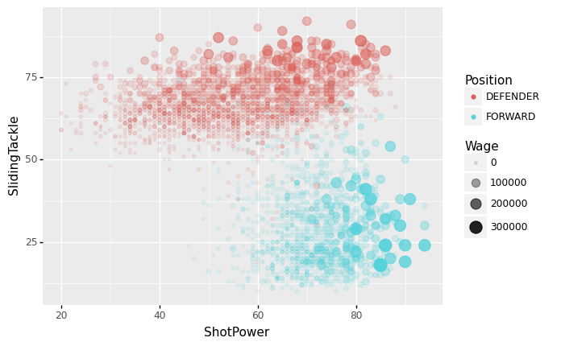

중간고사
1. 시각화의 해석 - 다음을 잘 읽고 물음에 답하라. (20점)
(1) 아래의 그림을 보고 올바르게 해석한 것을 고르라. (모두 맞출경우만 정답으로 인정)
#hide_input
x = [10, 8, 13, 9, 11, 14, 6, 4, 12, 7, 5]
y1 = [8.04, 6.95, 7.58, 8.81, 8.33, 9.96, 7.24, 4.26, 10.84, 4.82, 5.68]
y2 = [9.14, 8.14, 8.74, 8.77, 9.26, 8.10, 6.13, 3.10, 9.13, 7.26, 4.74]
y3 = [7.46, 6.77, 12.74, 7.11, 7.81, 8.84, 6.08, 5.39, 8.15, 6.42, 5.73]
x4 = [8, 8, 8, 8, 8, 8, 8, 19, 8, 8, 8]
y4 = [6.58, 5.76, 7.71, 8.84, 8.47, 7.04, 5.25, 12.50, 5.56, 7.91, 6.89]
fig, ((ax1,ax2),(ax3,ax4)) = plt.subplots(2,2)
ax1.plot(x,y1,'.')
ax1.set_title("(a)")
ax2.plot(x,y2,'.')
ax2.set_title("(b)")
ax3.plot(x,y3,'.'); ax3.plot(x[2],y3[2],'o',color='C1')
ax3.set_title("(c)")
ax4.plot(x4,y4,'.'); ax4.plot(x4[-4],y4[-4],'o',color='C1')
ax4.set_title("(d)")
fig.suptitle("Anscombe's quartet",size=15)
plt.tight_layout()
- 소윤: (a)의 경우 \((x_i,y_i)\)의 산점도가 직선형태이므로 표본상관계수의 값을 해석하는 것이 두 자료의 관계를 파악할때 도움을 준다.
- 다호: (b)의 경우 \((x_i,y_i)\)의 산점도가 이차곡선이므로 표본상관계수의 해석으로 두 자료의 관계를 모두 파악할 수 없다.
- 하니: (c)의 경우 주황색으로 표시된 점을 제외한다면 표본상관계수로 자료를 해석하기에 바람직하다.
- 도한: (d)도 (c)와 마찬가지로 주황색으로 표시된 점을 제외한다면 표본상관계수로 자료를 해석하기에 바람직하다.
(풀이)
- 정답: 소윤, 다호, 하니가 맞게 서술함.
- 도한이 틀린이유: 주황색점을 제외할 경우 \(x\)의 변화량이 0이므로 분모가 0으로 수렴. 따라서 상관계수의 해석이 무의미하다.
(2) 아래의 그림을 보고 올바르게 해석한 것을 모두 고르라. (모두 맞출경우만 정답으로 인정) - 그림에 대한 배경설명은 10월17일,19일의 “아이스크림을 많이 먹으면 걸리는 병”을 참고
#hide_input
df=pd.read_csv('https://raw.githubusercontent.com/guebin/DV2022/master/_notebooks/icecream.csv')
ggplot(data=df.assign(temp=pd.cut(df.temp,[-np.inf,0,5,10,15,20,25,30,np.inf])))\
+geom_point(aes(x='icecream',y='disease',color='temp'))\
+geom_smooth(aes(x='icecream',y='disease',color='temp'))/home/cgb4/anaconda3/envs/py37/lib/python3.7/site-packages/plotnine/stats/smoothers.py:311: PlotnineWarning: Confidence intervals are not yet implementedfor lowess smoothings.
<ggplot: (8776319243321)>- 소윤: 아이스크림과 소아마비는 상관계수는 양수이다.
- 다호: 상관계수가 양수라는 정보만으로는 소아마비와 아이스크림사이에 인과성이 있다고 주장하기 어렵다.
- 하니: 소아마비와 아이스크림 사이에 존재하는 은닉변수 온도를 통제한다면 소아마비와 아이스크림 사이의 상관계수는 0에 가깝다.
- 도한: 하니의 분석에 따르면 소아마비와 아이스크림 사이의 인과성은 없다고 보아야 한다. (단 소아마비와 아이스크림 사이의 은닉된 변수는 온도가 유일하다고 가정한다)
(풀이)
- 정답: 소윤, 다호, 하니, 도한 모두 맞게 서술함
2. 시각화구현 I - 다음을 잘 읽고 물음에 답하라. (10점)
(1)~(3) 주어진 자료에 대하여 다음을 시각화 하라. (maplotlib 이용)
(1) 출제의도: 마커변경, 색깔변경
- 채점기준: 색깔이 정확하게 일치하지 않을 경우 0점으로 처리
(2) 출제의도: title설정
(3) 출제의도: linetype 변경, dot connected-plot
(4) ~ (5) 주어진 자료에 대하여 다음을 시각화 하라.
(4) 출제의도: legend
(5) 출제의도: linetype, linewidth 변경
- 채점기준: 선의두께가 예시와 조금 달라도 만점으로 인정 (두께의 변화만 있으면 정답으로 인정함)
3. 시각화구현 II – 다음을 잘 읽고 물음에 답하라. (10점)
주어진 자료가 아래와 같다고 하자.
(1) matplotlib와 seaborn을 이용하여 아래와 같이 시각화 하라.
- alpha=0.1을 사용
fig,ax = plt.subplots(2,2)
ax[0,0].plot(x1,y1,'.')
ax[0,0].plot(x2,y2,'.',alpha=0.1)
ax[0,0].set_title("(a) matplotlib - highlight (x1,y1)")
sns.scatterplot(x=x1,y=y1,ax=ax[0,1])
sns.scatterplot(x=x2,y=y2,ax=ax[0,1],alpha=0.1)
ax[0,1].set_title("(b) seaborn - highlight (x1,y1)")
ax[1,0].plot(x1,y1,'.',alpha=0.1)
ax[1,0].plot(x2,y2,'.')
sns.scatterplot(x=x1,y=y1,ax=ax[1,1],alpha=0.1)
ax[1,0].set_title("(c) matplotlib - highlight (x2,y2)")
sns.scatterplot(x=x2,y=y2,ax=ax[1,1])
ax[1,1].set_title("(d) seaborn - highlight (x2,y2)")
plt.tight_layout()
- 채점기준: (b)와 (d)의 그림을 seaborn으로 생성하지 않을 경우 정답으로 인정안함
(2) plotnine을 이용하여 아래와 같이 시각화하라. - alpha=0.1을 사용
x=np.concatenate([x1,x2])
y=np.concatenate([y1,y2])
df = pd.DataFrame({'x':x,'y':y,'cat':['A']*len(x1)+['B']*len(x2)})
ggplot(df)+geom_point(aes(x='x',y='y',color='cat'),alpha=0.1)\
+geom_smooth(aes(x='x',y='y',color='cat'))\
+geom_smooth(aes(x='x',y='y'))/home/cgb4/anaconda3/envs/py37/lib/python3.7/site-packages/plotnine/stats/smoothers.py:311: PlotnineWarning: Confidence intervals are not yet implementedfor lowess smoothings.
<ggplot: (8776325576381)>- 채점기준: 산점도, 그룹별추세선, 전체추세선이 모두 있을 경우만 정답으로 인정
4. 자료분석 및 시각화 I (40점) – FIFA22자료
아래의 코드를 활용하여 FIFA22의 자료를 불러온뒤 물음에 답하라.
df = pd.read_csv('https://raw.githubusercontent.com/guebin/DV2021/master/_notebooks/2021-10-25-FIFA22_official_data.csv')
df| ID | Name | Age | Photo | Nationality | Flag | Overall | Potential | Club | Club Logo | ... | SlidingTackle | GKDiving | GKHandling | GKKicking | GKPositioning | GKReflexes | Best Position | Best Overall Rating | Release Clause | DefensiveAwareness | |
|---|---|---|---|---|---|---|---|---|---|---|---|---|---|---|---|---|---|---|---|---|---|
| 0 | 212198 | Bruno Fernandes | 26 | https://cdn.sofifa.com/players/212/198/22_60.png | Portugal | https://cdn.sofifa.com/flags/pt.png | 88 | 89 | Manchester United | https://cdn.sofifa.com/teams/11/30.png | ... | 65.0 | 12.0 | 14.0 | 15.0 | 8.0 | 14.0 | CAM | 88.0 | €206.9M | 72.0 |
| 1 | 209658 | L. Goretzka | 26 | https://cdn.sofifa.com/players/209/658/22_60.png | Germany | https://cdn.sofifa.com/flags/de.png | 87 | 88 | FC Bayern München | https://cdn.sofifa.com/teams/21/30.png | ... | 77.0 | 13.0 | 8.0 | 15.0 | 11.0 | 9.0 | CM | 87.0 | €160.4M | 74.0 |
| 2 | 176580 | L. Suárez | 34 | https://cdn.sofifa.com/players/176/580/22_60.png | Uruguay | https://cdn.sofifa.com/flags/uy.png | 88 | 88 | Atlético de Madrid | https://cdn.sofifa.com/teams/240/30.png | ... | 38.0 | 27.0 | 25.0 | 31.0 | 33.0 | 37.0 | ST | 88.0 | €91.2M | 42.0 |
| 3 | 192985 | K. De Bruyne | 30 | https://cdn.sofifa.com/players/192/985/22_60.png | Belgium | https://cdn.sofifa.com/flags/be.png | 91 | 91 | Manchester City | https://cdn.sofifa.com/teams/10/30.png | ... | 53.0 | 15.0 | 13.0 | 5.0 | 10.0 | 13.0 | CM | 91.0 | €232.2M | 68.0 |
| 4 | 224334 | M. Acuña | 29 | https://cdn.sofifa.com/players/224/334/22_60.png | Argentina | https://cdn.sofifa.com/flags/ar.png | 84 | 84 | Sevilla FC | https://cdn.sofifa.com/teams/481/30.png | ... | 82.0 | 8.0 | 14.0 | 13.0 | 13.0 | 14.0 | LB | 84.0 | €77.7M | 80.0 |
| ... | ... | ... | ... | ... | ... | ... | ... | ... | ... | ... | ... | ... | ... | ... | ... | ... | ... | ... | ... | ... | ... |
| 16705 | 240558 | 18 L. Clayton | 17 | https://cdn.sofifa.com/players/240/558/18_60.png | England | https://cdn.sofifa.com/flags/gb-eng.png | 53 | 70 | Cheltenham Town | https://cdn.sofifa.com/teams/1936/30.png | ... | 12.0 | 55.0 | 54.0 | 52.0 | 50.0 | 59.0 | GK | 52.0 | €238K | NaN |
| 16706 | 262846 | �. Dobre | 20 | https://cdn.sofifa.com/players/262/846/22_60.png | Romania | https://cdn.sofifa.com/flags/ro.png | 53 | 63 | FC Academica Clinceni | https://cdn.sofifa.com/teams/113391/30.png | ... | 12.0 | 57.0 | 52.0 | 53.0 | 48.0 | 58.0 | GK | 53.0 | €279K | 5.0 |
| 16707 | 241317 | 21 Xue Qinghao | 19 | https://cdn.sofifa.com/players/241/317/21_60.png | China PR | https://cdn.sofifa.com/flags/cn.png | 47 | 60 | Shanghai Shenhua FC | https://cdn.sofifa.com/teams/110955/30.png | ... | 9.0 | 49.0 | 48.0 | 45.0 | 38.0 | 52.0 | GK | 47.0 | €223K | 21.0 |
| 16708 | 259646 | A. Shaikh | 18 | https://cdn.sofifa.com/players/259/646/22_60.png | India | https://cdn.sofifa.com/flags/in.png | 47 | 67 | ATK Mohun Bagan FC | https://cdn.sofifa.com/teams/113146/30.png | ... | 13.0 | 49.0 | 41.0 | 39.0 | 45.0 | 49.0 | GK | 47.0 | €259K | 7.0 |
| 16709 | 178453 | 07 A. Censori | 17 | https://cdn.sofifa.com/players/178/453/07_60.png | Italy | https://cdn.sofifa.com/flags/it.png | 28 | 38 | Arezzo | https://cdn.sofifa.com/teams/110907/30.png | ... | NaN | 7.0 | 1.0 | 36.0 | 6.0 | 9.0 | ST | 36.0 | NaN | NaN |
16710 rows × 65 columns
(1) 연령별로 선수들의 잠재력을 시각화하고 싶다. 여기에서 잠재력은 아래의 수식의 Potential2를 의미한다.
Potential2 = Potential - Overall아래의 세부지침에 맞추어 연령별 Potential2의 산점도와 boxplot을 그려라. – (10점)
(세부지침)
step1: 결측치가 가장 많은 2개의 컬럼을 찾고 이를 제거하라.
step2: dropna()를 이용하여 결측치를 제거하라.
step3: Potential2 = Potential - Overall 를 이용하여 Potential2를 구하라.
step4: 구간 [0,20,22,26,100]를 설정하고 이를 기준으로 Age를 그룹화하라. (총 4개의 그룹으로 나누어져야 한다)
step5: 그룹화된 Age를 x축으로, Potential2를 y축으로, 색깔을 그룹화된 Age로 설정한 뒤 산점도와 박스플랏을 겹쳐그려라. - 산점도의 파라메터: alpha=0.5,size=0.1,position=‘jitter’ - 박스플랏의 파라메터: alpha=0.8
(풀이)
<class 'pandas.core.frame.DataFrame'>
RangeIndex: 16710 entries, 0 to 16709
Data columns (total 65 columns):
# Column Non-Null Count Dtype
--- ------ -------------- -----
0 ID 16710 non-null int64
1 Name 16710 non-null object
2 Age 16710 non-null int64
3 Photo 16710 non-null object
4 Nationality 16710 non-null object
5 Flag 16710 non-null object
6 Overall 16710 non-null int64
7 Potential 16710 non-null int64
8 Club 16446 non-null object
9 Club Logo 16710 non-null object
10 Value 16710 non-null object
11 Wage 16710 non-null object
12 Special 16710 non-null int64
13 Preferred Foot 16710 non-null object
14 International Reputation 16710 non-null float64
15 Weak Foot 16710 non-null float64
16 Skill Moves 16710 non-null float64
17 Work Rate 16710 non-null object
18 Body Type 16681 non-null object
19 Real Face 16681 non-null object
20 Position 16684 non-null object
21 Jersey Number 16684 non-null float64
22 Joined 15198 non-null object
23 Loaned From 1132 non-null object
24 Contract Valid Until 16359 non-null object
25 Height 16710 non-null object
26 Weight 16710 non-null object
27 Crossing 16710 non-null float64
28 Finishing 16710 non-null float64
29 HeadingAccuracy 16710 non-null float64
30 ShortPassing 16710 non-null float64
31 Volleys 16673 non-null float64
32 Dribbling 16710 non-null float64
33 Curve 16673 non-null float64
34 FKAccuracy 16710 non-null float64
35 LongPassing 16710 non-null float64
36 BallControl 16710 non-null float64
37 Acceleration 16710 non-null float64
38 SprintSpeed 16710 non-null float64
39 Agility 16673 non-null float64
40 Reactions 16710 non-null float64
41 Balance 16673 non-null float64
42 ShotPower 16710 non-null float64
43 Jumping 16673 non-null float64
44 Stamina 16710 non-null float64
45 Strength 16710 non-null float64
46 LongShots 16710 non-null float64
47 Aggression 16710 non-null float64
48 Interceptions 16702 non-null float64
49 Positioning 16702 non-null float64
50 Vision 16673 non-null float64
51 Penalties 16710 non-null float64
52 Composure 16459 non-null float64
53 Marking 892 non-null float64
54 StandingTackle 16710 non-null float64
55 SlidingTackle 16673 non-null float64
56 GKDiving 16710 non-null float64
57 GKHandling 16710 non-null float64
58 GKKicking 16710 non-null float64
59 GKPositioning 16710 non-null float64
60 GKReflexes 16710 non-null float64
61 Best Position 16710 non-null object
62 Best Overall Rating 16710 non-null float64
63 Release Clause 14961 non-null object
64 DefensiveAwareness 15818 non-null float64
dtypes: float64(40), int64(5), object(20)
memory usage: 8.3+ MB- ’Loaned From’와 ’Marking’이 가장 결측치가 많이 포함되어있음
data1= df.drop(columns=['Loaned From', 'Marking']).dropna()\
.eval('Potential2 = Potential- Overall')\
.assign(Age = lambda df: pd.cut(df['Age'],[0,20,22,26,100]))
data1 | ID | Name | Age | Photo | Nationality | Flag | Overall | Potential | Club | Club Logo | ... | GKDiving | GKHandling | GKKicking | GKPositioning | GKReflexes | Best Position | Best Overall Rating | Release Clause | DefensiveAwareness | Potential2 | |
|---|---|---|---|---|---|---|---|---|---|---|---|---|---|---|---|---|---|---|---|---|---|
| 0 | 212198 | Bruno Fernandes | (22, 26] | https://cdn.sofifa.com/players/212/198/22_60.png | Portugal | https://cdn.sofifa.com/flags/pt.png | 88 | 89 | Manchester United | https://cdn.sofifa.com/teams/11/30.png | ... | 12.0 | 14.0 | 15.0 | 8.0 | 14.0 | CAM | 88.0 | €206.9M | 72.0 | 1 |
| 1 | 209658 | L. Goretzka | (22, 26] | https://cdn.sofifa.com/players/209/658/22_60.png | Germany | https://cdn.sofifa.com/flags/de.png | 87 | 88 | FC Bayern München | https://cdn.sofifa.com/teams/21/30.png | ... | 13.0 | 8.0 | 15.0 | 11.0 | 9.0 | CM | 87.0 | €160.4M | 74.0 | 1 |
| 2 | 176580 | L. Suárez | (26, 100] | https://cdn.sofifa.com/players/176/580/22_60.png | Uruguay | https://cdn.sofifa.com/flags/uy.png | 88 | 88 | Atlético de Madrid | https://cdn.sofifa.com/teams/240/30.png | ... | 27.0 | 25.0 | 31.0 | 33.0 | 37.0 | ST | 88.0 | €91.2M | 42.0 | 0 |
| 3 | 192985 | K. De Bruyne | (26, 100] | https://cdn.sofifa.com/players/192/985/22_60.png | Belgium | https://cdn.sofifa.com/flags/be.png | 91 | 91 | Manchester City | https://cdn.sofifa.com/teams/10/30.png | ... | 15.0 | 13.0 | 5.0 | 10.0 | 13.0 | CM | 91.0 | €232.2M | 68.0 | 0 |
| 4 | 224334 | M. Acuña | (26, 100] | https://cdn.sofifa.com/players/224/334/22_60.png | Argentina | https://cdn.sofifa.com/flags/ar.png | 84 | 84 | Sevilla FC | https://cdn.sofifa.com/teams/481/30.png | ... | 8.0 | 14.0 | 13.0 | 13.0 | 14.0 | LB | 84.0 | €77.7M | 80.0 | 0 |
| ... | ... | ... | ... | ... | ... | ... | ... | ... | ... | ... | ... | ... | ... | ... | ... | ... | ... | ... | ... | ... | ... |
| 16703 | 259718 | F. Gebhardt | (0, 20] | https://cdn.sofifa.com/players/259/718/22_60.png | Germany | https://cdn.sofifa.com/flags/de.png | 52 | 66 | FC Basel 1893 | https://cdn.sofifa.com/teams/896/30.png | ... | 53.0 | 45.0 | 47.0 | 52.0 | 57.0 | GK | 52.0 | €361K | 6.0 | 14 |
| 16704 | 251433 | B. Voll | (0, 20] | https://cdn.sofifa.com/players/251/433/22_60.png | Germany | https://cdn.sofifa.com/flags/de.png | 58 | 69 | F.C. Hansa Rostock | https://cdn.sofifa.com/teams/27/30.png | ... | 59.0 | 60.0 | 56.0 | 55.0 | 61.0 | GK | 58.0 | €656K | 5.0 | 11 |
| 16706 | 262846 | �. Dobre | (0, 20] | https://cdn.sofifa.com/players/262/846/22_60.png | Romania | https://cdn.sofifa.com/flags/ro.png | 53 | 63 | FC Academica Clinceni | https://cdn.sofifa.com/teams/113391/30.png | ... | 57.0 | 52.0 | 53.0 | 48.0 | 58.0 | GK | 53.0 | €279K | 5.0 | 10 |
| 16707 | 241317 | 21 Xue Qinghao | (0, 20] | https://cdn.sofifa.com/players/241/317/21_60.png | China PR | https://cdn.sofifa.com/flags/cn.png | 47 | 60 | Shanghai Shenhua FC | https://cdn.sofifa.com/teams/110955/30.png | ... | 49.0 | 48.0 | 45.0 | 38.0 | 52.0 | GK | 47.0 | €223K | 21.0 | 13 |
| 16708 | 259646 | A. Shaikh | (0, 20] | https://cdn.sofifa.com/players/259/646/22_60.png | India | https://cdn.sofifa.com/flags/in.png | 47 | 67 | ATK Mohun Bagan FC | https://cdn.sofifa.com/teams/113146/30.png | ... | 49.0 | 41.0 | 39.0 | 45.0 | 49.0 | GK | 47.0 | €259K | 7.0 | 20 |
14398 rows × 64 columns
fig = ggplot(data=data1)
scatter = geom_point(aes(x='Age',y='Potential2',colour='Age'),alpha=0.5,size=0.1,position='jitter')
boxplot = geom_boxplot(aes(x='Age',y='Potential2',colour='Age'),alpha=0.8)
fig+scatter+boxplot
<ggplot: (8776319269061)>- 채점기준: Age의 Label을 사용하지 않아도 만점으로 인정함.
(2) 포지션별로 선수들의 능력치와 Wage를 시각화하고 싶다. 아래의 dictionary를 이용하여 Position을 재정의하라.
position_dict = {
'GOALKEEPER':{'GK'},
'DEFENDER':{'CB','RCB','LCB','RB','LB','RWB','LWB'},
'MIDFIELDER':{'CM','RCM','LCM','CDM','RDM','LDM','CAM','RAM','LAM','RM','LM'},
'FORWARD':{'ST','CF','RF','LF','RW','LW','RS','LS'},
'SUB':{'SUB'},
'RES':{'RES'}
}
position_dict{'GOALKEEPER': {'GK'},
'DEFENDER': {'CB', 'LB', 'LCB', 'LWB', 'RB', 'RCB', 'RWB'},
'MIDFIELDER': {'CAM',
'CDM',
'CM',
'LAM',
'LCM',
'LDM',
'LM',
'RAM',
'RCM',
'RDM',
'RM'},
'FORWARD': {'CF', 'LF', 'LS', 'LW', 'RF', 'RS', 'RW', 'ST'},
'SUB': {'SUB'},
'RES': {'RES'}}아래의 세부지침에 맞추어 포지션별 ShotPower와 SlidingTackle의 산점도를 그려라. – (30점)
세부지침
step1: 결측치가 가장 많은 2개의 컬럼을 찾고 이를 제거하라.
step2: dropna()를 이용하여 결측치를 제거하라.
step3: hint1과 position_dict을 참고하여 Position을 적절하게 변환하라. (변환된 값을 Position으로 저장할 것)
step4: hint2를 참고하여 Wage를 적절하게 변환하라. (변환된 값을 Wage에 저장할 것)
step5: Position==“DEFENDER” or Position==“FORWARD”에 해당하는 관측치를 고른 뒤 x축에 ShotPower, y축에 SlidingTackle 을 시각화하라. Position은 color로 구분하고 Wage는 size와 alpha로 구분하라.
hint1: Position column의 변환을 위한 코드
hint2: Wage column의 변환을 위한 함수
(풀이)
data2=df.drop(columns=['Loaned From', 'Marking']).dropna()\
.assign(Wage = lambda df: list(map(f,df['Wage'])))\
.assign(Position = lambda df: list(map(lambda x: x.split('>')[-1], df.Position)))\
.assign(Position = lambda df:
[key for x in df.Position for key in position_dict if x in position_dict[key]]
)
data2| ID | Name | Age | Photo | Nationality | Flag | Overall | Potential | Club | Club Logo | ... | SlidingTackle | GKDiving | GKHandling | GKKicking | GKPositioning | GKReflexes | Best Position | Best Overall Rating | Release Clause | DefensiveAwareness | |
|---|---|---|---|---|---|---|---|---|---|---|---|---|---|---|---|---|---|---|---|---|---|
| 0 | 212198 | Bruno Fernandes | 26 | https://cdn.sofifa.com/players/212/198/22_60.png | Portugal | https://cdn.sofifa.com/flags/pt.png | 88 | 89 | Manchester United | https://cdn.sofifa.com/teams/11/30.png | ... | 65.0 | 12.0 | 14.0 | 15.0 | 8.0 | 14.0 | CAM | 88.0 | €206.9M | 72.0 |
| 1 | 209658 | L. Goretzka | 26 | https://cdn.sofifa.com/players/209/658/22_60.png | Germany | https://cdn.sofifa.com/flags/de.png | 87 | 88 | FC Bayern München | https://cdn.sofifa.com/teams/21/30.png | ... | 77.0 | 13.0 | 8.0 | 15.0 | 11.0 | 9.0 | CM | 87.0 | €160.4M | 74.0 |
| 2 | 176580 | L. Suárez | 34 | https://cdn.sofifa.com/players/176/580/22_60.png | Uruguay | https://cdn.sofifa.com/flags/uy.png | 88 | 88 | Atlético de Madrid | https://cdn.sofifa.com/teams/240/30.png | ... | 38.0 | 27.0 | 25.0 | 31.0 | 33.0 | 37.0 | ST | 88.0 | €91.2M | 42.0 |
| 3 | 192985 | K. De Bruyne | 30 | https://cdn.sofifa.com/players/192/985/22_60.png | Belgium | https://cdn.sofifa.com/flags/be.png | 91 | 91 | Manchester City | https://cdn.sofifa.com/teams/10/30.png | ... | 53.0 | 15.0 | 13.0 | 5.0 | 10.0 | 13.0 | CM | 91.0 | €232.2M | 68.0 |
| 4 | 224334 | M. Acuña | 29 | https://cdn.sofifa.com/players/224/334/22_60.png | Argentina | https://cdn.sofifa.com/flags/ar.png | 84 | 84 | Sevilla FC | https://cdn.sofifa.com/teams/481/30.png | ... | 82.0 | 8.0 | 14.0 | 13.0 | 13.0 | 14.0 | LB | 84.0 | €77.7M | 80.0 |
| ... | ... | ... | ... | ... | ... | ... | ... | ... | ... | ... | ... | ... | ... | ... | ... | ... | ... | ... | ... | ... | ... |
| 16703 | 259718 | F. Gebhardt | 19 | https://cdn.sofifa.com/players/259/718/22_60.png | Germany | https://cdn.sofifa.com/flags/de.png | 52 | 66 | FC Basel 1893 | https://cdn.sofifa.com/teams/896/30.png | ... | 10.0 | 53.0 | 45.0 | 47.0 | 52.0 | 57.0 | GK | 52.0 | €361K | 6.0 |
| 16704 | 251433 | B. Voll | 20 | https://cdn.sofifa.com/players/251/433/22_60.png | Germany | https://cdn.sofifa.com/flags/de.png | 58 | 69 | F.C. Hansa Rostock | https://cdn.sofifa.com/teams/27/30.png | ... | 10.0 | 59.0 | 60.0 | 56.0 | 55.0 | 61.0 | GK | 58.0 | €656K | 5.0 |
| 16706 | 262846 | �. Dobre | 20 | https://cdn.sofifa.com/players/262/846/22_60.png | Romania | https://cdn.sofifa.com/flags/ro.png | 53 | 63 | FC Academica Clinceni | https://cdn.sofifa.com/teams/113391/30.png | ... | 12.0 | 57.0 | 52.0 | 53.0 | 48.0 | 58.0 | GK | 53.0 | €279K | 5.0 |
| 16707 | 241317 | 21 Xue Qinghao | 19 | https://cdn.sofifa.com/players/241/317/21_60.png | China PR | https://cdn.sofifa.com/flags/cn.png | 47 | 60 | Shanghai Shenhua FC | https://cdn.sofifa.com/teams/110955/30.png | ... | 9.0 | 49.0 | 48.0 | 45.0 | 38.0 | 52.0 | GK | 47.0 | €223K | 21.0 |
| 16708 | 259646 | A. Shaikh | 18 | https://cdn.sofifa.com/players/259/646/22_60.png | India | https://cdn.sofifa.com/flags/in.png | 47 | 67 | ATK Mohun Bagan FC | https://cdn.sofifa.com/teams/113146/30.png | ... | 13.0 | 49.0 | 41.0 | 39.0 | 45.0 | 49.0 | GK | 47.0 | €259K | 7.0 |
14398 rows × 63 columns
fig = ggplot(data=data2.query('Position=="DEFENDER" or Position=="FORWARD"'))
scatter = geom_point(aes(x='ShotPower',y='SlidingTackle',color='Position',size='Wage',alpha='Wage'))
fig+scatter
<ggplot: (8776325574701)>- 채점기준: df[‘Position’]이 아니라 df[‘Best Position’]을 이용하여 자료를 변형하고 시각화 하는 경우 부분점수 없이 0점임
5. 자료분석 및 시각화 II (20점) – HRDataset_v14
아래의 코드를 활용하여 Kaggle의 HRdataset을 불러오고 물음에 답하라.
df = pd.read_csv('https://raw.githubusercontent.com/guebin/DV2022/master/posts/HRDataset_v14.csv')
df| Employee_Name | EmpID | MarriedID | MaritalStatusID | GenderID | EmpStatusID | DeptID | PerfScoreID | FromDiversityJobFairID | Salary | ... | ManagerName | ManagerID | RecruitmentSource | PerformanceScore | EngagementSurvey | EmpSatisfaction | SpecialProjectsCount | LastPerformanceReview_Date | DaysLateLast30 | Absences | |
|---|---|---|---|---|---|---|---|---|---|---|---|---|---|---|---|---|---|---|---|---|---|
| 0 | Adinolfi, Wilson K | 10026 | 0 | 0 | 1 | 1 | 5 | 4 | 0 | 62506 | ... | Michael Albert | 22.0 | Exceeds | 4.60 | 5 | 0 | 1/17/2019 | 0 | 1 | |
| 1 | Ait Sidi, Karthikeyan | 10084 | 1 | 1 | 1 | 5 | 3 | 3 | 0 | 104437 | ... | Simon Roup | 4.0 | Indeed | Fully Meets | 4.96 | 3 | 6 | 2/24/2016 | 0 | 17 |
| 2 | Akinkuolie, Sarah | 10196 | 1 | 1 | 0 | 5 | 5 | 3 | 0 | 64955 | ... | Kissy Sullivan | 20.0 | Fully Meets | 3.02 | 3 | 0 | 5/15/2012 | 0 | 3 | |
| 3 | Alagbe,Trina | 10088 | 1 | 1 | 0 | 1 | 5 | 3 | 0 | 64991 | ... | Elijiah Gray | 16.0 | Indeed | Fully Meets | 4.84 | 5 | 0 | 1/3/2019 | 0 | 15 |
| 4 | Anderson, Carol | 10069 | 0 | 2 | 0 | 5 | 5 | 3 | 0 | 50825 | ... | Webster Butler | 39.0 | Google Search | Fully Meets | 5.00 | 4 | 0 | 2/1/2016 | 0 | 2 |
| ... | ... | ... | ... | ... | ... | ... | ... | ... | ... | ... | ... | ... | ... | ... | ... | ... | ... | ... | ... | ... | ... |
| 306 | Woodson, Jason | 10135 | 0 | 0 | 1 | 1 | 5 | 3 | 0 | 65893 | ... | Kissy Sullivan | 20.0 | Fully Meets | 4.07 | 4 | 0 | 2/28/2019 | 0 | 13 | |
| 307 | Ybarra, Catherine | 10301 | 0 | 0 | 0 | 5 | 5 | 1 | 0 | 48513 | ... | Brannon Miller | 12.0 | Google Search | PIP | 3.20 | 2 | 0 | 9/2/2015 | 5 | 4 |
| 308 | Zamora, Jennifer | 10010 | 0 | 0 | 0 | 1 | 3 | 4 | 0 | 220450 | ... | Janet King | 2.0 | Employee Referral | Exceeds | 4.60 | 5 | 6 | 2/21/2019 | 0 | 16 |
| 309 | Zhou, Julia | 10043 | 0 | 0 | 0 | 1 | 3 | 3 | 0 | 89292 | ... | Simon Roup | 4.0 | Employee Referral | Fully Meets | 5.00 | 3 | 5 | 2/1/2019 | 0 | 11 |
| 310 | Zima, Colleen | 10271 | 0 | 4 | 0 | 1 | 5 | 3 | 0 | 45046 | ... | David Stanley | 14.0 | Fully Meets | 4.50 | 5 | 0 | 1/30/2019 | 0 | 2 |
311 rows × 36 columns
(1) 데이터를 조사하고 올바르게 분석한 사람을 모두 고르라. (모두 맞칠경우만 정답으로 인정)
- 소윤: 근무인원수가 가장 많은 인종(RaceDesc)은 ’White’이며 이는 ’Asian’인종과 ’Black or African American’의 합보다 많다.
- 다호: ’RaceDesc==White’의 성별(Sex)임금차이는 2000이상이다.
- 하니: 퇴직한사람(Termd==1)은 모두 104명이며 백인여성의 퇴직자수가 가장 많다.
- 도한: 퇴직한사람중 아시아인의 비율은 10%가 넘지 않는다.
(풀이)
모두 참이다.
데이터조사
<class 'pandas.core.frame.DataFrame'>
RangeIndex: 311 entries, 0 to 310
Data columns (total 36 columns):
# Column Non-Null Count Dtype
--- ------ -------------- -----
0 Employee_Name 311 non-null object
1 EmpID 311 non-null int64
2 MarriedID 311 non-null int64
3 MaritalStatusID 311 non-null int64
4 GenderID 311 non-null int64
5 EmpStatusID 311 non-null int64
6 DeptID 311 non-null int64
7 PerfScoreID 311 non-null int64
8 FromDiversityJobFairID 311 non-null int64
9 Salary 311 non-null int64
10 Termd 311 non-null int64
11 PositionID 311 non-null int64
12 Position 311 non-null object
13 State 311 non-null object
14 Zip 311 non-null int64
15 DOB 311 non-null object
16 Sex 311 non-null object
17 MaritalDesc 311 non-null object
18 CitizenDesc 311 non-null object
19 HispanicLatino 311 non-null object
20 RaceDesc 311 non-null object
21 DateofHire 311 non-null object
22 DateofTermination 104 non-null object
23 TermReason 311 non-null object
24 EmploymentStatus 311 non-null object
25 Department 311 non-null object
26 ManagerName 311 non-null object
27 ManagerID 303 non-null float64
28 RecruitmentSource 311 non-null object
29 PerformanceScore 311 non-null object
30 EngagementSurvey 311 non-null float64
31 EmpSatisfaction 311 non-null int64
32 SpecialProjectsCount 311 non-null int64
33 LastPerformanceReview_Date 311 non-null object
34 DaysLateLast30 311 non-null int64
35 Absences 311 non-null int64
dtypes: float64(2), int64(16), object(18)
memory usage: 87.6+ KB- EmpID가 missing이 없는 열임
소윤: 근무인원수가 가장 많은 인종(RaceDesc)은 ’White’이며 이는 ’Asian’인종과 ’Black or African American’의 합보다 많다. — 참
| EmpID | |
|---|---|
| RaceDesc | |
| American Indian or Alaska Native | 3 |
| Asian | 29 |
| Black or African American | 80 |
| Hispanic | 1 |
| Two or more races | 11 |
| White | 187 |
다호: ’RaceDesc==White’의 성별(Sex)임금차이는 2000이상이다. — 참
| Salary | ||
|---|---|---|
| RaceDesc | Sex | |
| American Indian or Alaska Native | F | 63436.500000 |
| M | 70545.000000 | |
| Asian | F | 67520.117647 |
| M | 69939.416667 | |
| Black or African American | F | 66963.829787 |
| M | 85066.121212 | |
| Hispanic | M | 83667.000000 |
| Two or more races | F | 58068.500000 |
| M | 62313.800000 | |
| White | F | 68846.519231 |
| M | 65334.132530 |
하니: 퇴직한사람(Termd==1)은 모두 104명이며 백인여성의 퇴직자수가 가장 많다. — 참
| Termd | ||
|---|---|---|
| RaceDesc | Sex | |
| American Indian or Alaska Native | F | 0 |
| M | 0 | |
| Asian | F | 6 |
| M | 3 | |
| Black or African American | F | 15 |
| M | 14 | |
| Hispanic | M | 0 |
| Two or more races | F | 2 |
| M | 1 | |
| White | F | 37 |
| M | 26 |
도한: 퇴직한사람중 아시아인의 비율은 10%가 넘지 않는다. — 참
| Termd | |
|---|---|
| RaceDesc | |
| American Indian or Alaska Native | 0 |
| Asian | 9 |
| Black or African American | 29 |
| Hispanic | 0 |
| Two or more races | 3 |
| White | 63 |
(2) White, Black or African American, Asian 인종(RaceDesc)에 대하여 남여급여차이를 조사하고자 한다. 아래와 같은 Boxplot을 생성하라.
(풀이)